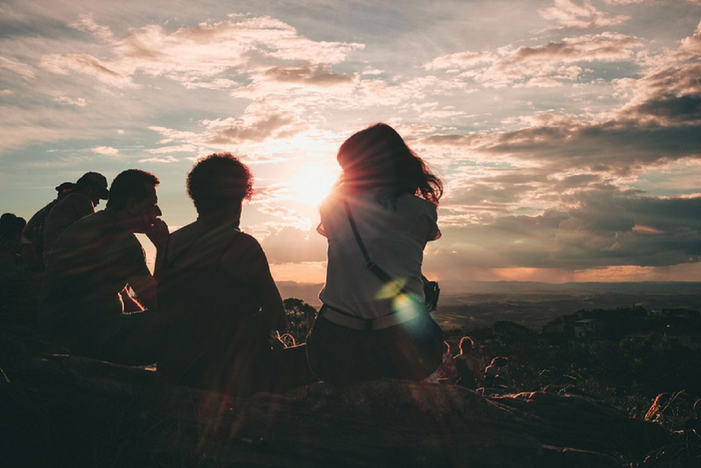

Мотивація подорожувати
Мотивація подорожувати, надихнути себе - це перша важлива складова для людей, які жодного разу не виїжджали за кордон або за межі свого міста (селища). Якщо людина добре змотивувати, то він обов'язково зробить задумане. А багато людей, як показує досвід і особистий, і моїх знайомих, не дозволяють собі навіть мріяти. У дитинстві практично кожен мріяв про подорожі в далекі країни, а потім, вступивши у доросле життя, деяких людей весь час щось зупиняє: якісь турботи, клопоти, більш пріоритетні витрати, відсутність грошей і багато іншого. І ця стаття, мотивація подорожувати, буде саме для таких людей.
Як би багато у вас не було турбот і клопоту, важливою відповідальності за кого-то или что-то, як би мало у вас не було грошей, ваша душа завжди буде хотіти вражень. Щоб ви не говорили, як би виправдовували своє становище, як би постійно відкладали і не говорили собі: «Зараз я зроблю (куплю) ось це, а поїду в наступному році» або, того гірше, «Так, ось це я хочу , але грошей у мене немає », - ваша душа буде вимагати вражень. Ви не будете щасливі в повній мірі. Це факт.
Або, наприклад, є ще така відмазка: «А навіщо мені туди їхати? Я по телевізору все подивлюся і вражень наберуся ». Побачити то побачите, але не відчуєте атмосферу, енергетику, смаки, запахи, не відчуєте емоцій першовідкривача, захоплення, захоплення від краси і гармонії природи, величі архітектури, мистецтва, подиву від людського генія в науці, культурі та величезного бажання вивчати, пізнавати, відчувати геніальне божественне творіння - планета Земля. Це не можна випробувати по телевізору. А душі це дуже потрібно.
Як же себе надихнути, яка повинна бути мотивація подорожувати, щоб все-таки зважитися на поїздку і не було ніяких перешкод? Нам в цьому допоможе:
1.Телевізор (звичайно ж)
2. Інтернет (куди ж без нього)
3. Спогади дитинства
4. Інтуїція
5 Любов до себе
6. Робота зі страхами
7. Вигода
1. Перегляд передач по телевізору
Мотивація подорожувати починається з перегляду по телевізору передач про подорожі. Дивимося будь телепередачі, фільми і намагаємося внутрішньо відчути, куди тягне найбільше. І не блокуємо себе. Це просто перегляд і пізнання своїх відчуттів. Будьте чесними перед собою, перш за все, і щиро говорите собі: «Тут я б дуже хотів побувати» і ніяких внутрішніх затискачів !!! Просто спокійно скажіть цю фразу і радісно посміхніться. Чи не вийде щиро радісно - посміхніться, як вийде, і все-таки спробуйте відчути радість. Це перший крок.
2. Інтернет
Далі йдіть в інтернет і дивіться різні фільми про цю країну (місті і ін.) Благо зараз їх дуже багато і на youtube.com, і на інших сайтах. Приклад фільмів, переглянутих мною і надихнули на поїздку в Італію, дивіться тут. Це можуть бути як документальні, історичні, художні фільми, так і відеоблог про подорожі.
Для посилення мотивації подорожувати - згадайте улюблені книги і героїв з дитинства.
Наприклад, розповідь Кіплінга «Рікі-Тікі-Таві». Кожна дитина хотів би побачити свого улюбленого героя. Де його можна побачити? В Африці, Азії або в зоопарку рідного горда? Ця дитяча мрія нікуди не поділася, вона просто потонула в суєті і турботах. Але енергія в неї була вкладена, і вона там залишилася. Або роман Жуля Верна «Діти капітана Гранта». Хто не мріяв побачити Нову Зеландію і Патагонію? До речі, а чи знаєте ви, що знаменитий фільм «Володар кілець» знімали в Новій Зеландії.
Замок Нойшванштайн, прототип казкового замку Уолта Діснея А замок зі казкових заставок мультфільмів Уолта Діснея - це замок Нойшванштайн у Баварії. Так з будь-якою книгою або художнім фільмом. Ти в них поринаєш, тобі хочеться побачити, відчути те ж, що і її герої, побувати в тій атмосфері, відчути події. І важливо не забувати про це, завжди говорити собі: «Я б хотів побачити ці землі, країни, міста, людей». 4. Інтуїція
4. Інтуїція
Існує ще така мотивація подорожувати як інтуїція. Вона завжди підкаже, куди саме вам потрібно в даний момент часу. І чому. Потрібно тільки прислухатися до свого внутрішнього голосу. Іноді ти не можеш відповісти чому, але точно знаєш, що тобі потрібно саме туди їхати, саме ось це місце побачити, відчути. Це речі тонкого плану, і це буває, коли душа просить потрапити саме в ці енергії, щоб пережити якісь емоції, можливо, залишити там якийсь досвід, щось відпустити, щось прийняти, кого-то зустріти.
5. Любов до себе
Якщо ви себе любите, ви обов'язково дасте шанс для своєї душі випробувати відчуття мандрівника. Перший крок - це, не дивлячись ні на яку вашу фінансову і т.д. ситуацію, говорити «я цього хочу» і при цьому не напружуватися. Просто «я хочу поїхати в ... і побачити там ... відчути захват, захоплення, здивування, щастя, радість і т.д.». Любов до себе виражається, в тому числі і в дозволі хотіти і неважливо чого. Просто «Я цього хочу. Дуже хочу!'.
6. Робота зі страхами
І ось вам вже хочеться, вже майже налаштувалися думати, як в голову починають лізти різні страхи і непонятки. Наприклад, «я не знаю іноземні мови, як я буду там спілкуватися?», «У мене немає закордонного паспорта», «мені не дадуть візу», «на кого я залишу кота», «якщо я одна поїду - чоловік образиться», « я там відразу втрачуся »,« я боюся літати літаком »,« а якщо мене заберуть в поліцію? »,« а якщо мене вкрадуть араби (турки) і продадуть в гарем? »(перелік страхів, дурних питань, негативних програм і їх антиподів читайте тут). В цьому випадку необхідно не навантажувати всім цим, а виписувати ці думки в зошит і шукати відповіді (в інтернет, у друзів, у нас) - як отримати закордонний паспорт, що необхідно для отримання візи. З проблеми робити завдання, питання і шукати відповідь, яких зараз в інтернет в надлишку.
7. Вигода
Вона теж є, так як ви приїжджаєте з подорожі як великий енергетичний наповнений повітряна куля. У вас маса енергії, очі світяться, ви всім хочете розповісти, як було класно, цікаво, як ви купалися з черепахами або каталися на слонах, які смішні маленькі слоненята, коли купаються в океані, як продають турецьке морозиво ... Вам хочеться показати фотографії в Сикстинській капелі або поруч з Ейфелевою вежею, ось скульптури і картини геніального Мікельанжелло і Караваджо, ось Давид, а ось П'єта - життя і дух в мармурі, а ось ви вже в буддійському храмі ... Світ прекрасний і величний! Ваша працездатність збільшується, мозок починає працювати активніше, тому що ви вже хочете знову подорожувати, ви вже намітили нову ціль, і вам просто необхідно заробляти ще більше грошей.
Ось така мотивація подорожувати у мене вийшла. Сподіваюся, вона допоможе зняти деякі блоки і обмеження і надихне Вас на першу подорож. А якщо щось залишиться - пишіть в коментарях. З радістю допоможемо від них позбутися! Чекаємо як питань, так і позитивних результатів у вигляді поїздок!